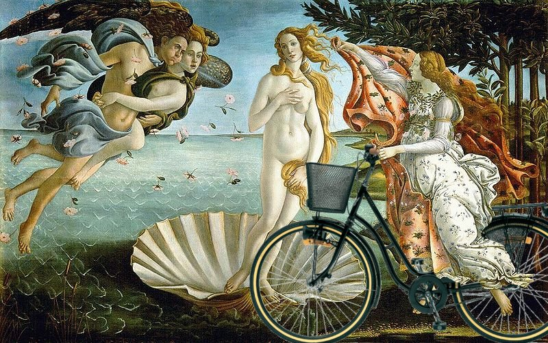

Apa saja yang dicari melalui mesin pencari Creative Commons?

Creative Commons (CC) meluncurkan mesin pencari CC yang baru pada bulan Februari yang diikuti dengan peluncuran koleksi karya dari MET. Sejak saat itu, jutaan orang telah menggunakan mesin pencari tersebut untuk mencari beragam hal yang berhubungan dengan koleksi-koleksi MET.
Mesin pencari ini ini masih dalam masa percobaan, namun setiap hari kemajuan terus tercipta berkat mesin ini yaitu berkembangnya jumlah konten yang dapat digunakan serta tersedianya “pintu utama” bagi orang-orang yang ingin mengakses lebih dari 1,2 miliar karya yang 9,994,327 diantaranya terindeks dalam mesin pencari CC.

Berikut ini adalah laporan kami dari aktivitas pencarian yang dilakukan orang-orang di mesin pencari CC:
Laporan tentang para pencari!
- Rata-rata, pengguna menghabiskan 4 menit 30 detik di situs mesin pencari CC.
- Hari paling ramai pengunjung adalah 7 Februari 2017, hari ketika mesin pencari ini diluncurkan yaitu 120.000 pengunjung.
- Situs ini telah dikunjungi pengguna sebanyak 1.780.000 kali sejak pertama kali diluncurkan.
- Mesin pencari CC baru-baru ini mengindeks koleksi dari Europeana sebanyak 430.000 koleksi.
Para pencari yang mencintai kesenian:
- 66.42% total dari pencarian adalah pencarian koleksi MET. Van Gogh, Monet, Botticelli, dan Picasso merupakan terminologi yang paling banyak digunakan, disusul oleh kucing dan anjing.
- Daftar karya aliran impresionisme dan post-impresionisme adalah daftar yang paling populer disusul oleh daftar lukisan mahakarya.

Sepuluh besar koleksi museum, per 7/1-7/2017:
-
“Wheat Field with Cypresses” oleh Vincent van Gogh (Belanda, Zundert 1853–1890 Auvers-sur-Oise) dari The Metropolitan Museum of Art/CC0 1.0
-
“[Self-Portrait with a Straw Hat (obverse: The Potato Peeler)(https://ccsearch.creativecommons.org/image/detail/x9INw3zeEJNrgAwSURPo6w==)” oleh Vincent van Gogh (Orang Belanda, Zundert 1853–1890 Auvers-sur-Oise) dari The Metropolitan Museum of Art/CC0 1.0
-
“Coronation of the Virgin” dari Paris, Prancis melalui The Metropolitan Museum of Art/CC0 1.0
-
“291 – Picasso-Braque Exhibition” oleh Alfred Stieglitz (Amerika, Hoboken, New Jersey 1864–1946 New York) melalui The Metropolitan Museum of Art/CC0 1.0
-
“France” oleh Utagawa Yoshikazu (Jepang, aktif sebagai pelukis pada tahun 1850–1870) melalui The Metropolitan Museum of Art/CC0 1.0
-
“Bridge over a Pond of Water Lilies” oleh Claude Monet (Prancis, Paris 1840–1926 Giverny) melalui The Metropolitan Museum of Art /CC0 1.0
-
“Cypresses” oleh Vincent van Gogh (Belanda, Zundert 1853–1890 Auvers-sur-Oise) melalui The Metropolitan Museum of Art/CC0 1.0
-
“Washington Crossing the Delaware” oleh Emanuel Leutze (Amerika, Schwäbisch Gmünd 1816–1868 Washington, D.C.) melalui The Metropolitan Museum of Art/CC0 1.0
-
“Camille Monet (1847–1879) on a Garden Bench” oleh Claude Monet (Prancis, Paris 1840–1926 Giverny) melalui The Metropolitan Museum of Art /CC0 1.0
-
“Young Woman with a Water Pitcher” oleh Johannes Vermeer (Belanda, Delft 1632–1675 Delft) melalui The Metropolitan Museum of Art/CC0 1.0
Sepuluh besar kata kunci di mesin pencarian:
- Monet
- Van Gogh
- Picasso
- Botticelli
- Kucing
- Anjing
- Pulau Mackinac
- Degas
- Lukisan
- Seni
Artikel ini merupakan artikel terjemahan dari artikel berjudul “Van Gogh, Monet, and… Mackinac Island? How CC Searchers are searching the commons” oleh Jennie Rose Halperin/CC BY 4.0.
Tags:
Oleh: Creative Commons Indonesia
23 Jul 2017Kategori:
Berita Terbaru
- Lokakarya Hak Cipta dan Lisensi Creative Commons di Pekanbaru
- Pengumuman Resmi: Hasil Akhir Training of Trainers Creative Commons Indonesia
- Literatur tentang Model Bisnis Terbuka "Made With CC"
- Data dan Artikel Ilmiah Terbuka dari PLOS!
- Konten Format Model 3 Dimensi Berilsensi CC di Platform Sketchfab